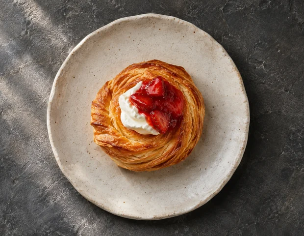

Sample menu
The menu.
Sample menu. Amounts in MXN are illustrative. Actual prices and availability are to be confirmed.


Concept image
Espresso4
-
Espresso
A short, concentrated shot.
MXN 44 ExampleSee how it’s made
Example preparationWater is pushed through finely ground coffee under pressure. The shot is served in a small cup.
-
Americano
Espresso topped up with hot water.
MXN 50 ExampleSee how it’s made
Example preparationHot water dilutes the shot for a longer cup.
-
Cortado
Espresso with a little steamed milk.
Price to be confirmedSee how it’s made
Example preparationSteamed milk softens the shot while keeping the coffee prominent.
-
Cappuccino
Espresso with steamed milk and foam.
MXN 69 ExampleSee how it’s made
Example preparationThe foam gives this drink a lighter texture than a cortado.

Concept image
Pour-over2
-
Pour-over coffee
Coffee brewed through a paper filter.
MXN 64 ExampleSee how it’s made
Example preparationWater is poured gradually over the grounds, dripping through into a carafe.
-
French press
Steeped coffee separated with a plunger.
Price to be confirmedSee how it’s made
Example preparationThe coffee steeps in the water before the metal filter is pressed down.

Concept image
Iced coffee3
-
Iced coffee
Black coffee served over ice.
Price to be confirmedSee how it’s made
Example preparationThe coffee cools as it is poured over ice.
-
Iced latte
Espresso, cold milk and ice.
MXN 76 ExampleSee how it’s made
Example preparationCold milk softens the espresso in this longer drink.
-
Cold brew
Coffee steeped in cold water.
Price to be confirmedSee how it’s made
Example preparationThe coffee steeps in cold water for several hours.

Concept image
Pastries & desserts3

-
Berry puff pastry
Crisp puff pastry with cream and fruit compote.
Price to be confirmedSee how it’s made
Example preparationThis sample pairs crisp laminated pastry with a spoonful of compote over the cream.
-
Chocolate brownie
A dense chocolate bake.
Price to be confirmedSee how it’s made
Example preparationThis sample has a moist centre and firmer edges.
-
Bread pudding
A soft baked bread dessert.
Price to be confirmedSee how it’s made
Example preparationIn this sample, the bread is soaked before baking.